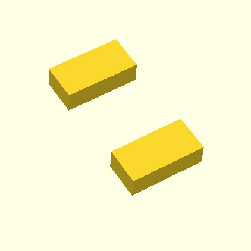

The original is on the right side. Note that mirror doesn't make a copy. Like rotate and scale, it changes the object.
mirror(v = [x, y, z]) (figure)
examples:
a = translate(v = [5, 5, 0]) (cube(size = [5, 10, 3]))
a += mirror(v = [1, 0, 0]) (a)
a = translate(v = [5, 5, 0]) (cube(size = [5, 10, 3]))
a += mirror(v = [0, 1, 0]) (a)
a = translate(v = [5, 5, 0]) (cube(size = [5, 10, 3]))
a += mirror(v = [0, 0, 1]) (a)
a = translate(v = [5, 5, 0]) (cube(size = [5, 10, 3]))
a += mirror(v = [1, 1, 0]) (a)